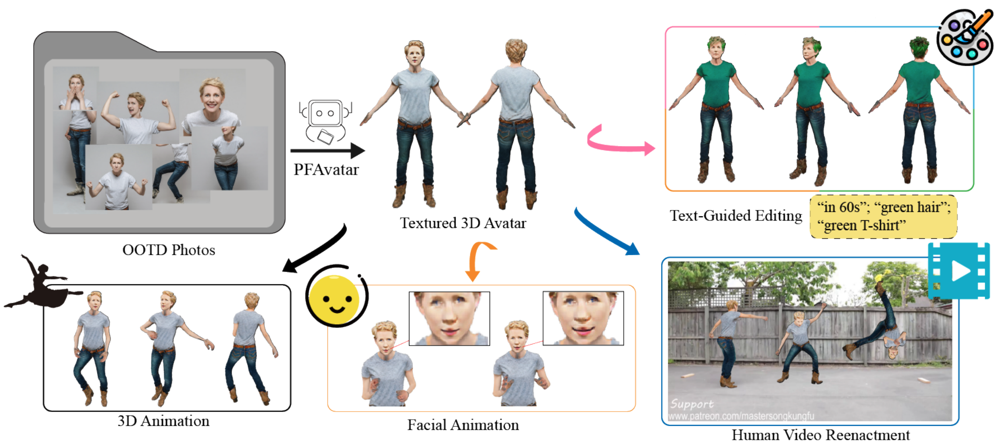

1State Key Laboratory of CAD&CG, Zhejiang University 2Independent Contributor 3Cornell University 4Hong Kong University of Science and Technology 5Huawei Technologies Ltd
🎉 The 40th Annual AAAI Conference on Artificial Intelligence (AAAI-2026 Main) 🍻

PFAvatar rapidly reconstructs high-fidelity 3D avatars from OOTD photos using pose-aware diffusion model, enabling realistic virtual try-on, animation, and human reenactment with superior detail and robustness.
Abstract
We propose PFAvatar (Pose-Fusion Avatar), a new method that reconstructs high-quality 3D avatars from Outfit of the Day(OOTD) photos, which exhibit diverse poses, occlusions, and complex backgrounds. Our method consists of two stages: (1) fine-tuning a pose-aware diffusion model from few-shot OOTD examples and (2) distilling a 3D avatar represented by a neural radiance field (NeRF). In the first stage, unlike previous methods that segment images into assets (e.g., garments, accessories) for 3D assembly, which is prone to inconsistency, we avoid decomposition and directly model the full-body appearance. By integrating a pre-trained ControlNet for pose estimation and a novel Condition Prior Preservation Loss (CPPL), our method enables end-to-end learning of fine details while mitigating language drift in few-shot training. Our method completes personalization in just 5 minutes, achieving a 48x speed-up compared to previous approaches. In the second stage, we introduce a NeRF-based avatar representation optimized by canonical SMPL-X space sampling and Multi-Resolution 3D-SDS. Compared to mesh-based representations that suffer from resolution-dependent discretization and erroneous occluded geometry, our continuous radiance field can preserve high-frequency textures (e.g., hair) and handle occlusions correctly through transmittance. Experiments demonstrate that PFAvatar outperforms state-of-the-art methods in terms of reconstruction fidelity, detail preservation, and robustness to occlusions/truncations, advancing practical 3D avatar generation from real-world OOTD albums. In addition, the reconstructed 3D avatar supports downstream applications such as virtual try-on, animation, and human video reenactment, further demonstrating the versatility and practical value of our approach.
Video
BibTeX
@misc{xdb2025pfavatar,
title={PFAvatar: Pose-Fusion 3D Personalized Avatar Reconstruction from Real-World Outfit-of-the-Day Photos},
author={Dianbing Xi and Guoyuan An and Jingsen Zhu and Zhijian Liu and Yuan Liu and Ruiyuan Zhang and Jiayuan Lu and Yuchi Huo and Rui Wang},
year={2025},
eprint={2511.12935},
archivePrefix={arXiv},
primaryClass={cs.CV},
url={https://arxiv.org/abs/2511.12935},
}